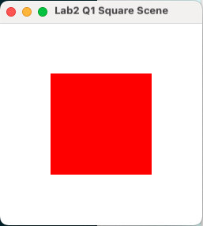
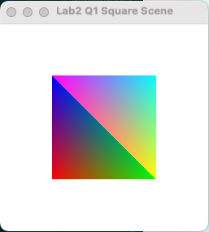

Objectives:
In this lab's exercises, you will extend lab#01 by:- Adding colour to primitives like triangles
- Combine triangles to draw a square.
- Move triangles around smoothly using double buffering
Continuing from last time
- Copy your
lab1folder tolab2. On Linux, you can use:cd ~/cits3003_labs
cp -r lab1 lab2 - Rename
q3triangleScene.cpptoq1square.cppand remove the other questions fromlab2(keep them inlab1). On Linux, you can use:mv q3triangleScene.cpp q1square.cpp
rm q1circle.cpp q2pointsScene.cpp
- Copy your
Q1. Drawing (one face of) a cube in 2D
- Suppose we want to draw a solid 3D cube on our 2D screen. To start with, suppose one face is facing directly
towards us. Then the other 5 faces are hidden behind this face, so it's easy - we just draw a square (in the
next lab we'll come back and consider what to do if there isn't a face directly facing us). So for now we'll
just focus on drawing a square using two triangles, say using:
const int NumTriangles = 2; const int NumVertices = 3 * NumTriangles; glm::vec3 points[NumVertices] = { glm::vec3(-0.5, -0.5, 0.0), glm::vec3(-0.5, 0.5, 0.0), glm::vec3(0.5, -0.5, 0.0), glm::vec3(0.5, 0.5, 0.0), glm::vec3(0.5, -0.5, 0.0), glm::vec3(-0.5, 0.5, 0.0) };Here we use 3D coordinates just to avoid changing it later - for now all z-coordinates are 0.0 (which is what OpenGL defaults to anyway if you draw using glm::vec2's). You'll need to change the second argument in the call to
glVertexAttribPointerfrom2to3. This is the number of components per vertex - see the OpenGL Reference Page for this function (for other OpenGL functions, see the OpenGL 4.5 Reference Pages on the left of this web page).Use the code above to initialize the triangles and build the program and run it. Compare with:

- Now suppose we want to see which part of the square is in each triangle. Add colours by adding
(below the code for
pointsfrom above):glm::vec3 colors[NumVertices] = { glm::vec3(0.0, 1.0, 0.0) /* Green, but choose any 6 colours */, ..., ..., glm::vec3(/* ... */), ..., ... }; - Copy the following
initfunction:void init(void) { // Create a vertex array object uint vao; glGenVertexArrays(1, &vao); glBindVertexArray(vao); // Create and initialize a buffer object uint buffer; glGenBuffers( 1, &buffer ); glBindBuffer( GL_ARRAY_BUFFER, buffer ); // First, we create an empty buffer of the size we need by passing // a NULL pointer for the data values glBufferData( GL_ARRAY_BUFFER, sizeof(points) + sizeof(colors), NULL, GL_STATIC_DRAW ); // Next, we load the real data in parts. We need to specify the // correct byte offset for placing the color data after the point // data in the buffer. Conveniently, the byte offset we need is // the same as the size (in bytes) of the points array, which is // returned from "sizeof(points)". glBufferSubData( GL_ARRAY_BUFFER, 0, sizeof(points), points ); glBufferSubData( GL_ARRAY_BUFFER, sizeof(points), sizeof(colors), colors ); // Load shaders uint program = ShaderHelper::load_shader("vshader24.glsl", "fshader24.glsl"); glUseProgram(program); // Initialize the vertex position attribute from the vertex shader uint loc = glGetAttribLocation(program, "vPosition"); glEnableVertexAttribArray(loc); glVertexAttribPointer(loc, 3, GL_FLOAT, GL_FALSE, 0, (void*)0); // Likewise, initialize the vertex color attribute. Once again, we // need to specify the starting offset (in bytes) for the color // data. Just like loading the array, we use "sizeof(points)" // to determine the correct value. uint vColor = glGetAttribLocation( program, "vColor" ); glEnableVertexAttribArray( vColor ); glVertexAttribPointer( vColor, 3, GL_FLOAT, GL_FALSE, 0, (void*)(sizeof(points)) ); glClearColor(1.0, 1.0, 1.0, 1.0); /* white background */ } - The main difference between this
initfunction and the previous one is that it also sends thecolorarray to the OpenGL buffer. Thenvshader24.glsluses this color information via thevColorshader input variable. - Make your program and run it. Verify that the vertices have the colours you assigned.
Here's mine that uses the colours with just 0.0's and 1.0's, aside from black and white:

What colours do you get in between the vertices? Experiment with different colours.
- Suppose we want to draw a solid 3D cube on our 2D screen. To start with, suppose one face is facing directly
towards us. Then the other 5 faces are hidden behind this face, so it's easy - we just draw a square (in the
next lab we'll come back and consider what to do if there isn't a face directly facing us). So for now we'll
just focus on drawing a square using two triangles, say using:
Q2. Rotating in 2D
- Now suppose we want the cube to rotate such that this face stays facing us. We could modify all
the vertex positions, but this would mean all positions would be sent to the graphics hardware again
(not an issue with so few vertices, but in general there could be many vertices and we'd want to avoid this).
Instead we can just pass the angle of rotation to the vertex shader, and have it rotate all the vertex positions by this angle. In fact we can just pass the time (since the program started) to the shader and have it increase the angle over time. - Copy
q1square.cpptoq2sqrotate.cpp. - Copy the existing
vshader24.glsltolab2_vq2.glsl. In the C++ programq2sqrotate.cpp, we will uselab2_vq2.glslandfshader24.glsltogether.In the vertex shader
lab2_vq2.glsl, add the time variable:uniform float time;
to the top of the file (abovemain) - Change the
mainfunction in this vertex shader so that the position is set instead via:float angle = time; gl_Position = vec4(vPosition.x*cos(angle) - vPosition.y*sin(angle), vPosition.x*sin(angle) + vPosition.y*cos(angle), 0.0, 1.0);[Why are there four components in gl_Position? Because OpenGL actually uses 4D homogeneous coordinates - we'll come to this in lectures soon. For now the last component should always be
1.0.]Here the angle is in radians, so the square rotates roughly every 6.28 seconds. Why
sinandcoshere? Well, basically because that's whatsinandcoswere invented for!
costells you how much the original (x or y) coordinate affects the same coordinate when rotated.
sintells you how much the original (x or y) coordinate affects the other coordinate when rotated.See 2D rotation.
- Change the call to
ShaderHelper::load_shaderto use your new vertex shader. - Add a new global variable called
timeParamin q2sqrotate.cpp. This variable will store the location of the new shader variabletime. Add the declaration oftimeParamnear the top of your q2sqrotate.cpp file, along with any other variable declarations.uint timeParam;
Set this global variable in the
initfunction (after the shaders have been loaded and "used") via:timeParam = glGetUniformLocation(program, "time");
[This is a uniform variable which means that it doesn't change during the drawing of a primitive, hence no array/buffer is needed unlike
vPositionandvColor.] - Set the new uniform
timevariable before the call toglDrawArraysvia:glUniform1f(timeParam, glfwGetTime());
glUniform1fsets a uniform parameter containing a single float to a value. Here the value is that returned byglfwGetTime()which is the time (in seconds) the GLFW library was initialized. See reference page for this function. - Make your program and execute it - you should see your square rotate! Increase the size of the window and enjoy.
- Experiment with increasing the speed of rotation. What happens if we square the angle? (Don't watch this too long, particularly if you're a little short of sleep).
- Add
glfwWindowHint(GLFW_DOUBLEBUFFER, GL_TRUE);after the call toglfwInit()inmainand replace the call toglFlush()withglfwSwapBuffers(window). This enables double buffering, which prevents flickering.Then again, modern graphics hardware often automatically double buffers, so you may not see any difference.
- Now suppose we want the cube to rotate such that this face stays facing us. We could modify all
the vertex positions, but this would mean all positions would be sent to the graphics hardware again
(not an issue with so few vertices, but in general there could be many vertices and we'd want to avoid this).